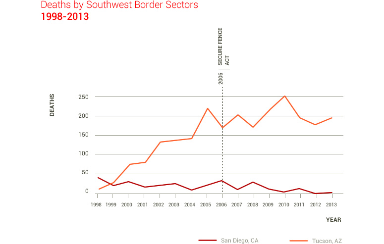

The humanitarian crisis bent by the rise in the number of unaccompanied Mexican and Central American alien children apprehended in the Southwest border (52,000 so far this year) has once again put the spotlight on the security issues surrounding the border between Mexico and the U.S. and the federal governments efforts to stop illegal immigration. These issues have been discussed for over half a century, yet the huge amounts of money channeled to fortify the border have had contradictory results. Univision Noticias gathered a set of unique and revealing statistics to demonstrate the complexity of the issues concerning the border, including: border patrol agents, apprehensions, deaths, “coyote” costs and changes in immigration routes over time.
AGENTS
Barack Obama recently announced that an additional 3.7 billion dollars were needed to respond to the humanitarian crisis resulting from the exponential rise of unaccompanied alien children apprehensions in the U.S.-Mexico border (more than 52,000 this fiscal year alone).
This adds to the billions of dollars that have already been appropriated (or will be) to avoid or disrupt illegal immigration. Yet it won’t be an easy path to obtain such a figure.
On the 26th of June of this year a key Senate panel gave a bipartisan approval to a $47 billion dollar budget for the Department of Homeland Security for the 2015 fiscal year –of which 77 million will be used to cope with the unaccompanied alien children, amount that according to the federal government isn’t enough.
Besides dealing with the influx of unaccompanied alien children, the Department of Homeland Security’s budget also seeks to deter illegal immigration.
One of the clauses included in the project requests raising immigration taxes, by air and sea, to have the necessary funds to hire 1,000 additional border patrol agents.
Furthermore, the U.S. Customs and Border Protection’s (CBP) budget will also increase by 4% and more money will be directed to increase apprehensions in the border.
Yet bigger and longer fences, more technology and more boots on the ground do not necessarily affect illegal immigration numbers.
Some border security operations, such as Operation Gatekeeper, even had contradictory effects according to many experts on the subject.
According to CBP public data and several research papers on the subject, these operations have had three key consequences: they’ve forced immigrants to cross at different points of entry where lower enforcement measures are in place, they increased the number of deaths along the US-Mexico border and they've decreased the number of immigrants willing or able to return to their home countries.
The incentives to cross illegally the border are far too strong for many, and as long as the immigrant’s home economies do not grow at a faster rate than the U.S., no fence will deter them from crossing.
Apprehensions on the Border
Since there is no way of knowing exactly how many immigrants cross the southern border illegally, we can only use the numbers of immigrants apprehended at the border to try to understand changes in immigration flows.
Recent statistics reveal a negative relationship between the budget allocated to border security and immigrants detentions. It might seem that the decrease in detained immigrants is due, for the most part, to increases in border security, but this is not the case, either.
The decrease in detentions is simply the result of fewer people trying to cross the border because of external factors such as labor opportunities and rising economies back home.
We can use the Mexican case to exemplify the above statement. For the first time in four decades, the net immigration from Mexico to the US fell to zero and was probably negative in 2012.

What made it happen? The weakened US job and housing construction markets and better economic opportunities in Mexico. Economic forces, and not fences on the border, made immigration flows drop. And as long as the US’s economic growth relative to the immigrant-sending countries is less than one, immigration will keep on falling.
But beyond just looking at detentions, what surprised us the most is that there is a positive relationship between budgets allocated and numbers of agents on one hand and deaths along the border on the other.
Besides the monetary costs of building a fence, costs are also accrued in the form of human lives. Border security operations have forced immigrants to cross illegally into the US through the Arizona desert, a journey full of far more hardships than other crossings.
While crossing the border became physically more perilous, it's also become that much more expensive. If the coyote business followed the supply and demand rules of economic theory perfectly then we'd have observed a fall in transportation costs. But the cost of smuggling has risen dramatically. The cost of crossing the border in 1980 was about $600 dollars, at the end of 2010 it cost around $3,000 and according to recent children testimonies, the trip now costs over $6,000 dollars.
Price changes have been most evident at the San Diego, El Paso and Del Río border crossings.
The best case study of changes in the flow of immigrants, border deaths and changes to numbers of agents comes with a comparison of San Diego and Tucson.
In 1997, the year Operation Rio Grande started, the number of immigrants apprehended at either of these border crossings intersected. A fence constructed in California had forced more immigrants into the Arizona desert and by 2001, the total number of detentions at both ports fell and continues to fall. The reasons seem to have nothing to do with the fence or the security cameras.
Although the number of detentions fell, more agents were actually deployed to both areas of the border. It comes as a surprise that even though fewer immigrants now cross the border illegally through Tucson, more border patrol agents are stationed there.
The Arizona desert has become a grim witness to the difficulties of achieving the American Dream. 219 corpses were found there in 2005, 251 in 2010 and overall deaths have increased to the tune of 1,664% from 1998 to 2013.
Far from deterring immigrants from crossing the border illegally, increased border security operations – which have included Operation Gatekeeper, Operation Hold-The-Line, Operation Rio Grande and the Secure Fence Act – have merely forced immigrants to cross at different border crossings.
Immigrants used to cross through San Diego and El Paso in the 1980s. But with the fence and security measurements, they now cross through Tucson, Arizona and Rio Grande Valley, Texas.
Deployments of US border patrol agents to all nine ports of entry along the Southwestern border have been constant over the last few years. Congress has asked repeatedly for increases in budget and more boots along the border, especially in Texas.
Just as there are more agents patrolling the border, deaths along the border have also risen, though more so in Texas and Arizona.
In 1998, 26 people died in the Rio Grande Valley. By 2013 this number had risen to 156. This means a 500% increase in deaths in that area. In Laredo, the percentage increase was 350% (from 20 to 90 deaths) from 1998 to 2012 and, although it decreased to 56 deaths in 2013, this number still represents a 180% increase when compared to 1998.
Most of the experts on the subject, Martin for example, state that border security issues, though key to an enforcement strategy, have received too much attention in the past few years. According to Martin, even if the US constructed a border fence along its entire southwestern border, the coyotes will always find a way to smuggle people in.
Conclusions drawn from most studies, Massey’s is a good example, argue that greater border security has had little to no effect on the probability of immigrating illegally to the US. Rather, it has a big effect on the probability of going back home.
According to Massey, while in 1980 some 50% of the immigrants eventually returned to their home countries, by the year 2000 no more than 25% were returning.
Leaving the fences behind, authors like Hanson have tried to explain decreases in immigration numbers through economic variables. Hanson, studying monthly border detentions, stated that when Mexican salaries fall 10% in comparison to US salaries, there is a 6% increase in attempted border crossing.
While conducting surveys, Reyes, Johnson and Van Swearingen found that even though most people they talked to were aware of increased border security measures, most did not find this a sufficient reason to stop trying to cross illegally into the US.
Methodology Note
Data on apprehensions, deaths and border patrol agents was downloaded from the Border Patrol website. The data on border crossing costs (coyotes) was obtained from the Mexican Migration Project of Princeton University. Click the following link to download the complete data: https://www.dropbox.com/sh/4r893m762uqrnnz/8tCVf3Kc3k.
To read other research on the subject, click the following link: https://www.dropbox.com/sh/fzd1nvf6xcjljvv/UALDif3tt4.